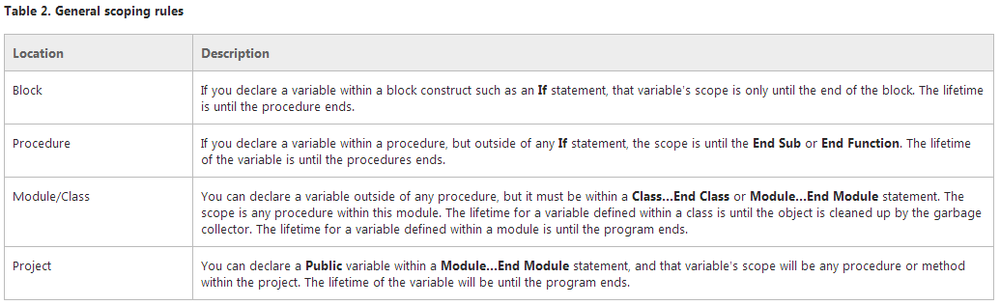

Intro
In this blog I am going to deal with 'variable scope'. The official MSDN definition is:
The scope of a variable, sometimes referred to as accessibility of a variable, refers to where the variable can be read from and/or written to, and the variable's lifetime, or how long it stays in memory. The scope of a procedure or method refers to where a procedure can be called from or under what context you are allowed to call a method.
The MSDN site also gives the really useful table below, which outlines concisely the general scoping rules for a variable.
What does that mean?
Objects created within methods are called local variables. They are local to the method, rather than belonging to object like member variables do. When the method ends the variable is destroyed and therefore can no longer be accessed. They are effectively temporary places to hold values.
On a technical level
At a technical level it is about putting things into memory or on 'the stack'. These variables are said to have 'local scope'.
The alternative to variables that get put on the 'stack' are 'reference types' that get created on an undifferentiated block of memory known as 'the heap'. These are 'reference types' as opposed to value types. When you declare an instance of a reference type you are actually declaring a reference which is a variable that refers to another object. It all seems a bit complicated when described like that, so let's look at an example to try to clarify it.
When we use the following code:
Person karen = new Client();
the 'new' operator creates a Client object on the heap and returns a reference to it. That reference is assigned to karen. So karen is a reference object that refers to a Client object on the heap. For all practical purposes though, you can treat karen as if it were the Client object itself.
When to use the various scopes
The majority of variables used in your programmes will be instance variables used at the procedure level. It is quite unusual to use variables at the 'block' level, but it is allowed within the language. Most variables relate to a particular instance of your object and so that will be the scope of that variable.
Module or Class level variables are used less frequently, but can be a good alternative to the cumbersome need to always pass variables from one routine to another using a parameter. Another common use of static member variables is to keep track of the number of instance objects that currently exist for your class. This count does not belong to any particular instance of the object so needs to be stored as a static variable.
Project level variables are effectively 'global' variables. If you wish to have a 'global' variable, one that can be seen by any procedure anywhere in your program, you need to declare this type of variable as a Public scope in a module somewhere in your program. These variables should be used sparingly as they are very hard to keep track of. Multiple routines may attempt to use the variable at the same time and this can cause unexpected problems and difficulties in debugging.